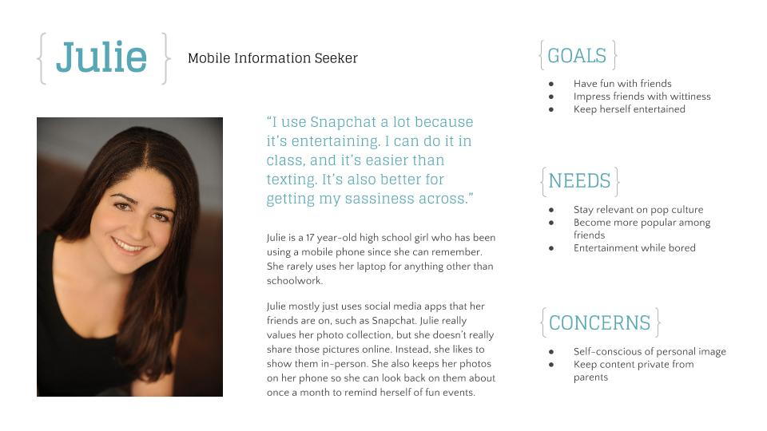
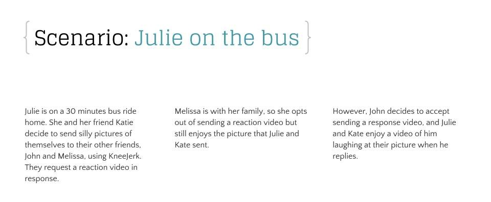
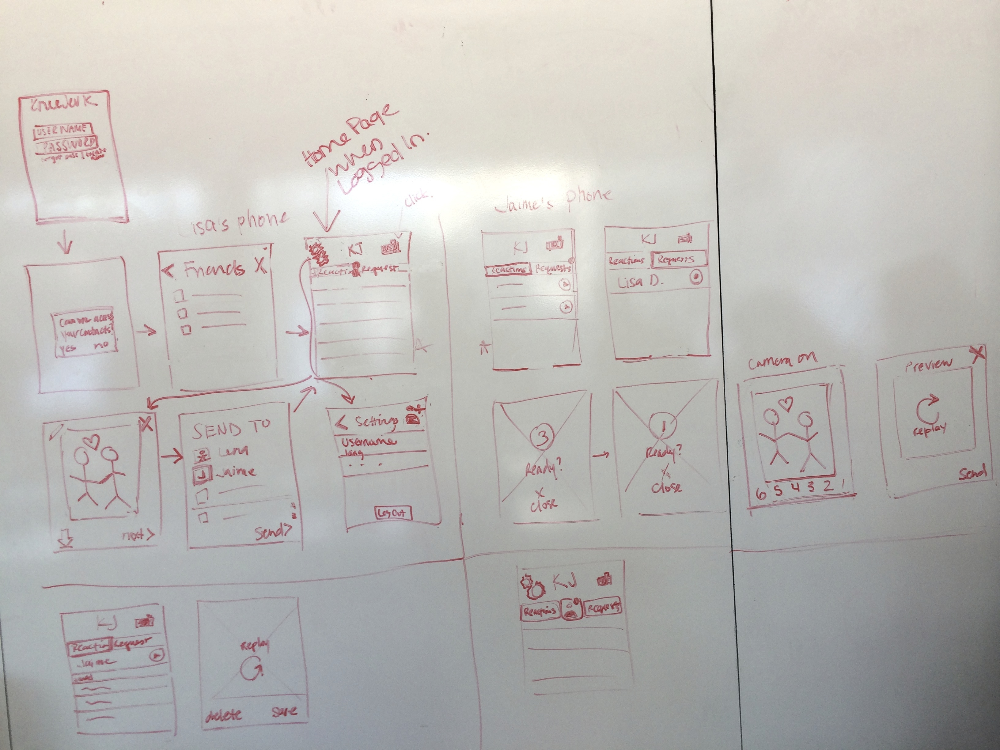
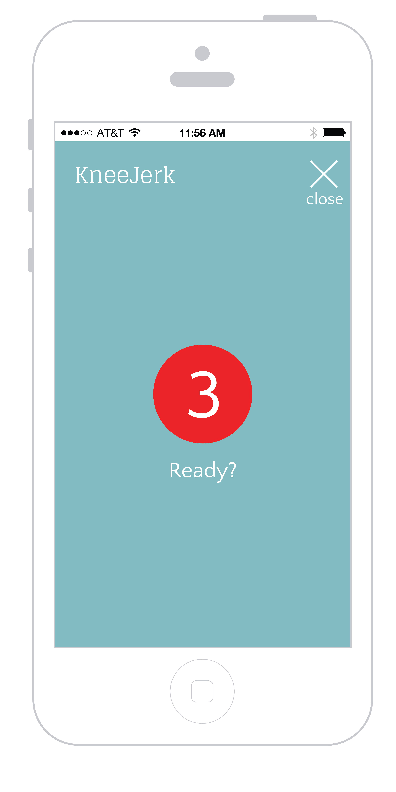
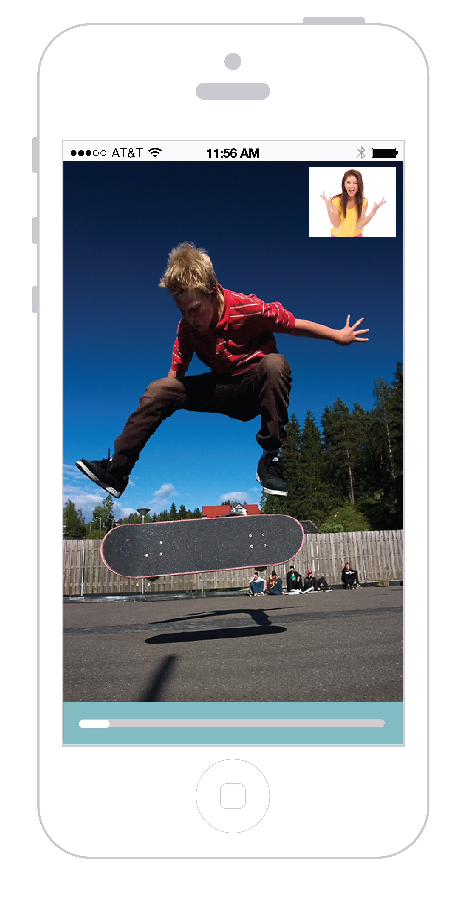
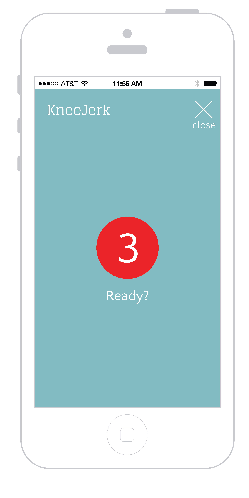
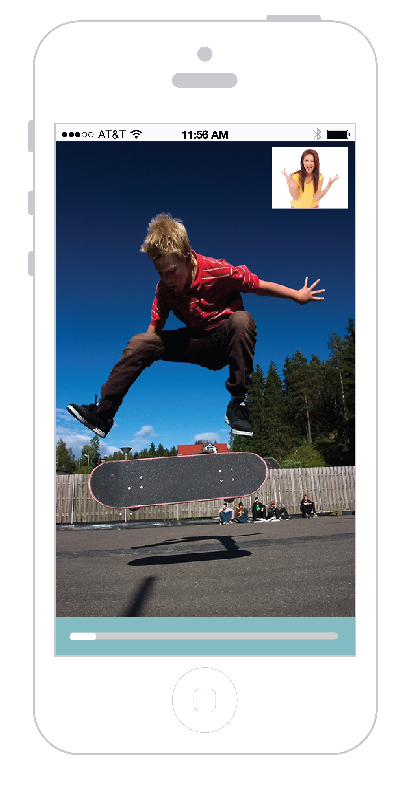

In the age of mobile, teenagers value their phones and virtual possessions more than many things in their lives. KneeJerk is an app that allows you to share photos and videos with friends, and then see their reactions when they receive them. Myself and three other students are creating the concept for KneeJerk for our Interaction Design Studio class. Our project prompt is to create an app for teenagers to help them use their virtual possessions in support of self-reflection and self-presentation.
Role Description
Each of us had to conduct research in a short amount of time, come together to synthesize our data, and then create a vision for an app. Once that was complete, we had to create wireframes and a concept video. The concept video is currently in progress.
Process
Because we had such a short amount of time delegated for research (4 days), we conducted guerilla research in the form of short interviews with teens of different ages and genders. We aimed to gather information about how teenagers use their mobile devices, and how they felt about their virtual possessions.Then, we synthesized our data using affinity diagramming and saw several emerging patterns.

Key Findings
- Photos are one of teens' most valued possesions
- Teens like taking photos as a social activity when they are bored
- Teens like sharing photos that express their personalities
- KneeJerk is a mobile information system for teenagers, to help them share interesting content with friends and collect their reactions for self-reflection.
  Next, we created wireframes and mockups for our concept.



 


